에너지관리기사 (2018-03-04 기출문제)
1과목: 연소공학
1. 고체연료에 대비 액체연료의 성분 조성비는?
- H2 함량이 적고 O2 함량이 적다.
- H2 함량이 크고 O2 함량이 적다.
- O2 함량이 크고 H2 함량이 크다.
- O2 함량이 크고 H2 함량이 적다.
(정답률: 65%)

2. 연돌에서 배출되는 연기의 농도를 1시간 동안 측정한 결과가 다음과 같을 때 매연의 농도율은 몇 %인가?
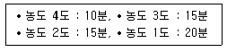
- 25
- 35
- 45
- 55
(정답률: 46%)
3. 탄산가스최대량(CO2max)에 대한 설명 중 ( )에 알맞은 것은?
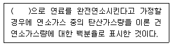
- 실제공기량
- 과잉공기량
- 부족공기량
- 이론공기량
(정답률: 79%)
4. 연소 배기가스 중 가장 많이 포함된 기체는?
- O2
- N2
- CO2
- SO2
(정답률: 71%)
5. 전압은 분압의 합과 같다는 법칙은?
- 아마겟의 법칙
- 뤼삭의 법칙
- 달톤의 법칙
- 헨리의 법칙
(정답률: 78%)
6. 액화석유가스(LPG)의 성질에 대한 설명으로 틀린 것은?
- 인화폭발의 위험성이 크다.
- 상온, 대기압에서는 액체이다.
- 가스의 비중은 공기보다 무겁다.
- 기화점열이 커서 냉각제로도 이용 가능하다.
(정답률: 72%)
7. 다음 중 매연의 발생 원인으로 가장 거리가 먼 것은?
- 연소실 온도가 높을 때
- 연소장치가 불량한 때
- 연료의 질이 나쁠 때
- 통풍력이 부족할 때
(정답률: 74%)
8. 일반적으로 기체연료의 연소방식을 크게 2가지로 분류한 것은?
- 등심연소와 분산연소
- 액면연소와 증발연소
- 증발연소와 분해연소
- 예혼합연소와 확산연소
(정답률: 81%)
9. 연소에 관한 용어, 단위 및 수식의 표현으로 옳은 것은?
- 화격자 연소율의 단위 : ㎏(g)/m2ㆍh
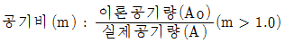
- 이론연소가스량(고체연료인 경우) : Nm3/Nm3
- 고체연료의 저위발열량(Hl)의 관계식 : Hl=Hh+600(9H-W)(kcal/kg)
(정답률: 67%)
10. 연소관리에 있어 연소배기가스를 분석하는 가장 직접적인 목적은?
- 공기비 계산
- 노내압 조절
- 연소열량 계산
- 매연농도 산출
(정답률: 73%)
11. 코크스로가스를 100Nm3 연소한 경우 습연소가스량과 건연소가스량의 차이는 약 몇 Nm3 인가? (단, 코크스로가스의 조성(용량%)은 CO2 3%, CO 8%, CH4 30%, C2H4 4%, H2 50% 및 N2 5%)
- 108
- 118
- 128
- 138
(정답률: 43%)
12. 석탄을 연소시킬 경우 필요한 이론산소량은 약 몇 Nm3/kg인가? (단, 중량비 조성은 C : 86%, H : 4%, O : 8%, S : 2%이다.)
- 1.49
- 1.78
- 2.03
- 2.45
(정답률: 55%)
13. 불꽃연소(Flaming combution)에 대한 설명으로 틀린 것은?
- 연소속도가 느리다.
- 연쇄반응을 수반한다.
- 연소사면체에 의한 연소이다.
- 가솔린의 연소가 이에 해당한다.
(정답률: 78%)
14. N2와 O2의 가스정수가 다음과 같을 때, N2가 70%인 N2와 O2의 혼합가스의 가스정수는 약 몇 kgf∙m/kg∙K인가? (단, 가스정수는 N2 : 30.26kgf∙m/kg∙K, O2 : 26.49jgf∙m/kg∙K이다.)
- 19.24
- 23.24
- 29.13
- 34.47
(정답률: 50%)
15. 다음 대기오염물 제거방법 중 분진의 제거방법으로 가장 거리가 먼 것은?
- 습식세정법
- 원심분리법
- 촉매산화법
- 중력침전법
(정답률: 61%)
16. 고체연료의 공업분석에서 고정탄소를 산출하는 식은?
- 100-[수분(%)+회분(%)+질소(%)]
- 100-[수분(%)+회분(%)+황분(%)]
- 100-[수분(%)+황분(%)+휘발분(%)]
- 100-[수분(%)+회분(%)+휘발분(%)]
(정답률: 77%)
17. 세정 집진장치의 입자 포집원리에 대한 설명으로 틀린 것은?
- 액적에 입자가 충돌하여 부착한다.
- 입자를 핵으로 한 증기의 응결에 의하여 응집성을 증가시킨다.
- 미립자의 확산에 의하여 액적과의 접촉을 좋게 한다.
- 배기의 습도 감소에 의하여 입자가 서로 응집한다.
(정답률: 55%)
18. 다음 중 연료 연소 시 최대탄산가스농도(CO2max)가 가장 높은 것은?
- 탄소
- 연료유
- 역청탄
- 코크스로가스
(정답률: 70%)
19. 프로판가스 1kg 연소시킬 때 필요한 이론공기량은 약 몇 Sm3/kg인가?
- 10.2
- 11.3
- 12.1
- 13.2
(정답률: 62%)
20. 다음 기체 중 폭발범위가 가장 넓은 것은?
- 수소
- 메탄
- 벤젠
- 프로판
(정답률: 77%)
2과목: 열역학
21. 그림과 같은 압력-부피선도(P-V선도)에서 A에서 C로의 정압과정 중 계는 50J 의 일을 받아들이고 25J의 열을 방출하며, C에서 B로의 정적과정 중 75J 의 열을 받아들인다면, B에서 A로의 과정이 단열일 때 계가 얼마의 일(J)을 하겠는가?
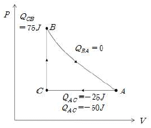
- 25
- 50
- 75
- 100
(정답률: 55%)
22. 다음 엔트로피에 관한 설명으로 옳은 것은?
- 비가역 사이클에서 클라시우스(clausius)의 적분은 영(0)이다.
- 두 상태 사이의 엔트로피 변화는 경로에는 무관하다.
- 여러 종류의 기체가 서로 확산되어 혼합하는 과정은 엔트로피가 감소한다고 볼 수 있다.
- 우주 전체의 엔트로피는 궁극적으로 감소되는 방향으로 변화한다.
(정답률: 53%)
23. 폴리트로픽 과정을 나타내는 다음 식에서 폴리트로픽 지수 과 관련하여 옳은 것은? (단, P는 압력, V는 부피이고, C는 상수이다. 또한, k는 비열비이다.)
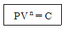
- n = ∞ : 단열과정
- n = 0 : 정압과정
- n = k : 등온과정
- n = 1 : 정적과정
(정답률: 64%)
24. 어떤 연료의 1kg의 발열량이 36000kJ 이다. 이 열이 전부 일로 바뀌고 1시간마다 30kg의 연료가 소비된다고 하면 발생하는 동력은 약 몇 kW 인가?
- 4
- 10
- 300
- 1200
(정답률: 54%)
25. 다음 설명과 가장 관계되는 열역학적 법칙은?
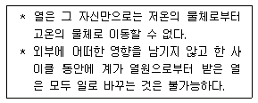
- 열역학 제 0법칙
- 열역학 제 1법칙
- 열역학 제 2법칙
- 열역학 제 3법칙
(정답률: 69%)
26. 다음 중 일반적으로 냉매로 쓰이지 않는 것은?
- 암모니아
- CO
- CO2
- 할로겐화탄소
(정답률: 58%)
27. 카르노 사이클에서 최고 온도는 600K이고, 최저 온도는 250K일 때 이 사이클의 효율은 약 몇 %인가?
- 41
- 49
- 58
- 64
(정답률: 59%)
28. CO2 기체 20kg을 15℃에서 215℃로 가열할 때 내부에너지의 변화는 약 몇 kJ가? (단, 이 기체의 정적비열은 0.67kJ/(kg∙K)이다.)
- 134
- 200
- 2680
- 4000
(정답률: 63%)
29. 그림과 같은 피스톤-실린더 장치에서 피스톤의 질량은 40kg이고, 피스톤 면적이 0.⑤m2 일 때 실린더 내의 절대압력은 약 몇 bar인가? (단, 국소 대기압은 0.96bar 이다.)
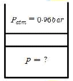
- 0.964
- 0.982
- 1.038
- 1.122
(정답률: 35%)
30. 처음 온도, 압축비, 공급 열량이 같을 경우 열효율의 크기를 옳게 나열한 것은?
- Otto cycle ＞ Sabathe cycle ＞ Diesel cycle
- Sabathe cycle ＞ Diesel cycle ＞ Otto cycle
- Diesel cycle ＞ Sabathe cycle ＞ Otto cycle
- Sabathe cycle ＞ Otto cycle ＞ Diesel cycle
(정답률: 73%)
31. 증기터빈의 노즐 출구에서 분출하는 수증기의 이론속도와 실제속도를 각각 Ct와 Ca라고 할 때 노즐효율 ηn의 식으로 옳은 것은? (단, 노즐 입구에서의 속도는 무시한다.)
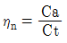
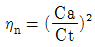
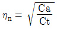
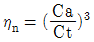
(정답률: 50%)
32. 냉장고가 저온체에서 30kW의 열을 흡수하여 고온체로 40kW의 열을 방출한다. 이 냉장고의 성능계수는?
- 2
- 3
- 4
- 5
(정답률: 59%)
33. 임계점(Critical Point)에 대한 설명 중 옳지 않은 것은?
- 액상, 기상, 고상이 함께 존재하는 점을 말한다.
- 임계점에서는 액상과 기상을 구분할 수 없다.
- 임계 압력 이상이 되면 상변화 과정에 대한 구분이 나타나지 않는다.
- 물의 임계점에서의 압력과 온도는 약 22.09 , 374.14℃이다.
(정답률: 59%)
34. -30℃, 200atm의 질소를 단열과정을 거쳐서 5atm까지 팽창했을 때의 온도는 약 얼마인가? (단, 이상기체의 가역과정이고 질소의 비열비는 1.41이다.)
- 6℃
- 83℃
- -172℃
- -190℃
(정답률: 34%)
35. 그림과 같은 브레이턴 사이클에서 효율(η)은? (단, P는 압력, v는 비체적이며, T1, T2, T3, T4는 각각의 지점에서의 온도이다, 또한, qin과 qout은 사이클에서 열이 들어오고 나감을 의미한다.)
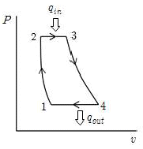
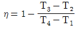
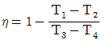
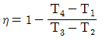
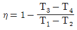
(정답률: 55%)
36. 온도 30℃, 압력 350kPa에서 비체적이 0.449m3/kg인 이상기체의 기체상수는 몇 kJ/kg∙K 인가?
- 0.143
- 0.287
- 0.518
- 0.842
(정답률: 50%)
37. 열펌프 사이클에 대한 성능계수(COP)는 다음 중 어느 것을 입력 일(work input)로 나누어 준 것인가?
- 고온부 방출열
- 저온부 흡수열
- 고온부가 가진 총 에너지
- 저온부가 가진 총 에너지
(정답률: 64%)
38. 다음 괄호 안에 들어갈 말로 옳은 것은?
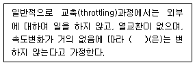
- 엔탈피
- 온도
- 압력
- 엔트로피
(정답률: 73%)
39. 랭킨사이클로 작동하는 증기 동력 사이클에서 효율을 높이기 위한 방법으로 거리가 먼 것은?
- 복수기에서의 압력을 상승시킨다.
- 터빈 입구의 온도를 높인다.
- 보일러의 압력을 상승시킨다.
- 재열 사이클(reheat cycle)로 운전한다.
(정답률: 61%)
40. 가역적으로 움직이는 열기관이 300℃의 고열원으로부터 200kJ의 열을 흡수하여 40℃의 저열원으로 열을 배출하였다. 이 때 40℃의 저열원으로 배출한 열량은 약 몇 kJ인가?
- 27
- 45
- 73
- 109
(정답률: 38%)
3과목: 계측방법
41. 불연속 제어동작으로 편차의 정(+), 부(-)에 의해서 조작신호가 최대, 최소가 되는 제어 동작은?
- 미분동작
- 적분동작
- 비례동작
- 온-오프동작
(정답률: 80%)
42. 물리적 가스분석계의 측정법이 아닌 것은?
- 밀도법
- 세라믹법
- 열전도율법
- 자동오르자트법
(정답률: 57%)
43. 다음 중 압력식 온도계를 이용하는 방법으로 가장 거리가 먼 것은?
- 고체 팽창식
- 액체 팽창식
- 기체 팽창식
- 증기 팽창식
(정답률: 72%)
44. 유속 10m/s의 물속에 피토관을 세울 때 수주의 높이는 약 몇 m인가? (단, 여기서 중력가속도 g=9.8m/s2이다.)
- 0.51
- 5.1
- 0.12
- 1.2
(정답률: 54%)
45. 내경이 50mm인 원관에 20℃ 물이 흐르고 있다. 층류로 흐를 수 있는 최대 유량은 약몇 m3/s인가? (단, 임계 레이놀즈수(Re)는 2320이고, 20℃일 때 동점성계수(Re)=1.0064×10-6m2/s이다.)
- 5.33×10-5
- 7.36×10-5
- 9.16×10-5
- 15.23×10-5
(정답률: 48%)
46. 다음 중 액면측정 방법으로 가장 거리가 먼 것은?
- 유리관식
- 부자식
- 차압식
- 박막식
(정답률: 53%)
47. 전기저항 온도계의 특징에 대한 설명으로 틀린 것은?
- 원격측정에 편리하다.
- 자동제어의 적용이 용이하다.
- 1000℃이상의 고온 측정에서 특히 정확하다.
- 자기 가열 오차가 발생하므로 보정이 필요하다.
(정답률: 68%)
48. 피드백 제어에 대한 설명으로 틀린 것은?
- 폐회로 방식이다.
- 다른 제어계보다 정확도가 증가한다.
- 보일러 점화 및 소화 시 제어한다.
- 다른 제어계보다 제어폭이 증가한다.
(정답률: 55%)
49. 서로 맞서 있는 2개 전극사이의 정전 용량은 전극사이에 있는 물질 유전율의 함수이다. 이러한 원리를 이용한 액면계는?
- 정전 용량식 액면계
- 방사선식 액면계
- 초음파식 액면계
- 중추식 액면계
(정답률: 73%)
50. 기준 수위에서의 압력과 측정 액면계에서의 압력의 차이로부터 액위를 측정하는 방식으로 고압 밀폐형 탱크의 측정에 적합한 액면계는?
- 차압식 액면계
- 편위식 액면계
- 부자식 액면계
- 유리관식 액면계
(정답률: 56%)
51. SI단위계에서 물리량과 기호가 틀린 것은?
- 질량 : kg
- 온도 : ℃
- 물질량 : mol
- 광도 : cd
(정답률: 71%)
52. 다음 중 습도계의 종류로 가장 거리가 먼 것은?
- 모발 습도계
- 듀셀 노점계
- 초음파식 습도계
- 전기저항식 습도계
(정답률: 45%)
53. 액주에 의한 압력측정에서 정밀 측정을 위한 보정으로 반드시 필요로 하지 않는 것은?
- 모세관 현상의 보정
- 중력의 보정
- 온도의 보정
- 높이의 보정
(정답률: 71%)
54. 다음 중 1000℃이상의 고온을 측정하는데 적합한 온도계는?
- CC(동-콘스탄탄)열전온도계
- 백금저항 온도계
- 바이메탈 온도계
- 광고온계
(정답률: 71%)
55. 자동제어에서 전달함수의 블록선도를 그림과 같이 등가변환시킨 것으로 적합한 것은?
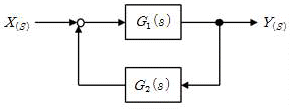
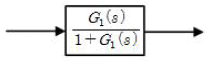
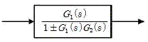
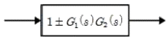
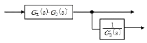
(정답률: 58%)
56. 다음 중 백금-백금.로듐 열전대 온도계에 대한 설명으로 가장 적절한 것은?
- 측정 최고온도는 크로멜-알루멜 열전대보다 낮다.
- 열기전력이 다른 열전대에 비하여 가장 높다.
- 안정성이 양호하여 표준용으로 사용된다.
- 200℃ 이하의 온도측정에 적당하다.
(정답률: 51%)
57. 다이어프램 압력계의 특징이 아닌 것은?
- 점도가 높은 액체에 부적합하다.
- 먼지가 함유된 액체에 적합하다.
- 대기압과의 차가 적은 미소압력의 측정에 사용한다.
- 다이어프램으로 고무, 스테인리스 등의 탄성체 박판이 사용된다.
(정답률: 55%)
58. 다음 중 차압식 유량계가 아닌 것은?
- 오리피스(orifice)
- 벤투리관(venturi)
- 로터미터(rotameter)
- 플로우 노즐(flow-nozzle)
(정답률: 72%)
59. 다음 유량계 중 유체압력 손실이 가장 적은 것은?
- 유속식(Impeller식)유량계
- 용적식 유량계
- 전자식 유량계
- 차압식 유량계
(정답률: 67%)
60. 2개의 수은 유리온도계를 사용하는 습도계는?
- 모발 습도계
- 건습구 습도계
- 냉각식 습도계
- 저항식 습도계
(정답률: 72%)
4과목: 열설비재료 및 관계법규
61. 에너지이용 합리화법에 따라 대통령령으로 정하는 일정규모 이상의 에너지를 사용하는 사업을 실시하거나 시설을 설치하려는 경우 에너지사용계획을 수립하여, 산업실시 전 누구에게 제출하여야 하는가?
- 대통령
- 시. 도지사
- 산업통상자원부장관
- 에너지 경제연구원장
(정답률: 54%)
62. 관의 신축량에 대한 설명으로 옳은 것은?
- 신축량은 관의 열팽창계수, 길이, 온도차에 반비례한다.
- 신축량은 관의 길이, 온도차에는 비례하지만 열팽창계수에는 반비례한다.
- 신축량은 관의 열팽창계수, 길이, 온도차에 비례한다.
- 신축량은 관의 열팽창계수에 비례하고 온도차와 길이에 반비례한다.
(정답률: 74%)
63. 유체가 관내를 흐를 때 생기는 마찰로 인한 압력손실에 대한 설명으로 틀린 것은?
- 유체의 흐르는 속도가 빨라지면 압력손실도 커진다.
- 관의 길이가 짧을수록 압력손실은 작아진다.
- 비중량이 큰 유체일수록 압력손실이 작다.
- 관의 내경이 커지면 압력손실은 작아진다.
(정답률: 61%)
64. 열팽창에 의한 배관의 측면 이동을 구속 또는 제한하는 장치가 아닌 것은?
- 앵커
- 스톱
- 브레이스
- 가이드
(정답률: 70%)
65. 제철 및 제강공정 중 배소로의 사용 목적으로 가장 거리가 먼 것은?
- 유해성분의 제거
- 산화도의 변화
- 분상광석의 괴상으로의 소결
- 원광석의 결합수의 제거와 탄산염의 분해
(정답률: 52%)
66. 에너지이용 합리화법에 따라 용접검사가 면제되는 대상범위에 해당되지 않는 것은?
- 주철제보일러
- 강철제 보일러 중 전열면적이 5 이하이고, 최고사용압력이 0.35MPa이하인 것
- 압력용기 중 동체의 두께가 6mm 미만인 것으로서 최고사용압력(MPa)과 내부부피(m3)를 곱한 수치가 0.02 이하인 것
- 온수보일러로서 전열면적이 20m2 이하이고, 최고사용압력이 0.3MPa이하인 것
(정답률: 52%)
67. 규조토질 단열재의 안전사용온도는?
- 300℃~500℃
- 500℃~800℃
- 800℃~1200℃
- 1200℃~1500℃
(정답률: 58%)
68. 에너지원별 에너지열량 환산기준으로 총발열량(kcal)이 가장 높은 연료는? (단, 1L 또는 1kg 기준이다.)
- 휘발유
- 항공유
- B-C유
- 천연가스
(정답률: 74%)
69. 에너지이용 합리화법에 따라 에너지사용안정을 위한 에너지저장의무 부과대상자에 해당되지 않는 사업자는?
- 전기사업법에 따른 전기사업자
- 석탄산업법에 따른 석탄가공업자
- 집단에너지사업법에 따른 집단에너지사업자
- 액화석유가스사업법에 따른 액화석유가스사업자
(정답률: 62%)
70. 용광로에서 코크스가 사용되는 이유로 가장 거리가 먼 것은?
- 열량을 공급한다.
- 환원성 가스를 생성시킨다.
- 일부의 탄소는 선철 중에 흡수된다.
- 철광석을 녹이는 용제 역할을 한다.
(정답률: 49%)
71. 내화물의 부피비중을 바르게 표현한 것은? (단, W1 : 시료의 건조중량(kg), W2 : 함수시료의 수중중량(kg), W3 : 함수시료의 중량(kg)이다.)
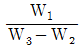
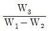
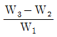
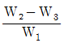
(정답률: 52%)
72. 다음 중 피가열물이 연소가스에 의해 오염되지 않는 가마는?
- 직화식가마
- 반머플가마
- 머플가마
- 직접식가마
(정답률: 66%)
73. 에너지법에 따른 용어의 정의에 대한 설명으로 틀린 것은?
- 에너지사용시설이란 에너지를 사용하는 공장.사업장 등의 시설이나 에너지를 전환하여 사용하는 시설을 말한다.
- 에너지사용자란 에너지를 사용하는 소비자를 말한다.
- 에너지공급자란 에너지를 생산.수입.전환.수송.저장 또는 판매하는 사업자를 말한다.
- 에너지란 연료.열 및 전기를 말한다.
(정답률: 61%)
74. 에너지이용 합리화법에 따라 에너지이용 합리화 기본계획에 포함되지 않는 것은?
- 에너지이용 합리화를 위한 기술개발
- 에너지의 합리적인 이용을 통한 공해성분(SOx, NOx)의 배출을 줄이기 위한 대책
- 에너지이용 합리화를 위한 가격예시제의 시행에 관한 사항
- 에너지이용 합리화를 위한 홍보 및 교육
(정답률: 44%)
75. 에너지이용 합리화법에 따라 효율관리기자재의 제조업자가 효율관리시험기관으로부터 측정결과를 통보받은 날 또는 자체측정을 완료한 날부터 그 측정결과를 며칠 이내에 한국에너지공단에 신고하여야 하는가?
- 15일
- 30일
- 60일
- 90일
(정답률: 55%)
76. 에너지이용 합리화법에 따른 특정열사용기자재 품목에 해당하지 않는 것은?
- 강철제 보일러
- 구멍탄용 온수보일러
- 태양열 집열기
- 태양광 발전기
(정답률: 62%)
77. 시멘트 제조에 사용하는 회전가마(rotary kiln)는 다음 여러 구역으로 구분된다. 다음 중 탄산염 원료가 주로 분해되어지는 구역은?
- 예열대
- 하소대
- 건조대
- 소성대
(정답률: 51%)
78. 내화물 SK-26번이면 용융온도 1580℃에 견디어야 한다. SK-30번이면 약 몇 ℃에 견디어야하는가?
- 1460℃
- 1670℃
- 1780
- 1800℃
(정답률: 66%)
79. 에너지이용 합리화법에 따라 에너지다소비사업자가 산업통상자원부령으로 정하는 바에 따라 신고하여야 하는 사항이 아닌 것은?
- 전년도의 분기별 에너지 사용량.제품 생산량
- 해당 연도의 분기별 에너지 사용예정량.제품 생산예정량
- 에너지사용기자재의 현황
- 에너지이용효과.에너지수급체계의 영향분석현황
(정답률: 52%)
80. 에너지법에 따라 지역에너지계획은 몇 년 이상을 계획기간으로 하여 수립.시행하는가?
- 3년
- 5년
- 7년
- 10년
(정답률: 67%)
5과목: 열설비설계
81. 내화벽의 열전도율이 0.9kcal/m∙h∙℃인 재질로 된 평면 벽의 양측 온도가 800℃와 100℃이다. 이 벽을 통한 단위면적당 열전달량이 1400kcal/m2∙h일 때, 벽 두께(cm)는?
- 25
- 35
- 45
- 55
(정답률: 48%)
82. 보일러에서 용접 후에 풀림처리를 하는 주된 이유는?
- 용접부의 열응력을 제거하기 위해
- 용접부의 균열을 제거하기 위해
- 용접부의 연신률을 증가하기 위해
- 용접부의 강도를 증가시키기 위해
(정답률: 78%)
83. 보일러 운전 및 성능에 대한 설명으로 틀린 것은?
- 보일러 송출증기의 압력을 낮추면 방열손실이 감소한다.
- 보일러의 송출압력이 증가할수록 가열에 이용할 수 있는 증기의 응축잠열은 작아진다.
- LNG를 사용하는 보일러의 경우 총 발열량의 약 10%는 배기가스 내부의 수증기에 흡수된다.
- LNG를 사용하는 보일러의 경우 배기가스로부터 발생되는 응축수의 pH는 11~12 범위에 있다.
(정답률: 46%)
84. 보일러 내처리제와 그 작용에 대한 연결로 틀린 것은?
- 탄산나트륨 –pH조정
- 수산화나트륨 –연화
- 탄닌 –슬러지조정
- 암모니아 –포밍방지
(정답률: 55%)
85. 급수처리 방법 중 화학적 처리방법은?
- 이온교환법
- 가열연화법
- 증류법
- 여과법
(정답률: 74%)
86. 보일러에서 연소용 공기 및 연소가스가 통과하는 순서로 옳은 것은?
- 송풍기→절탄기→과열기→공기예열기→연소실→굴뚝
- 송풍기→연소실→공기예열기→과열기→절탄기→굴뚝
- 송풍기→공기예열기→연소실→과열기→절탄기→굴뚝
- 송풍기→연소실→공기예열기→절탄기→과열기→굴뚝
(정답률: 57%)
87. 자연순환식 수관보일러에서 물의 순환에 관한 설명으로 틀린 것은?
- 순환을 높이기 위하여 수관을 경사지게 한다.
- 발생증기의 압력이 높을수록 순환력이 커진다.
- 순환을 높이기 위하여 수관 직경을 크게 한다.
- 순환을 높이기 위하여 보일러수의 비중차를 크게 한다.
(정답률: 43%)
88. 최고사용압력이 1MPa인 수관보일러의 보일러수 수질관리 기준으로 옳은 것은? (pH는 25℃ 기준으로 한다.)
- pH7-9, M알칼리도 100~800 mgCaCO3/L
- pH7-9, M알칼리도 80~600 mgCaCO3/L
- pH11-11.8, M알칼리도 100~800 mgCaCO3/L
- pH11-11.8, M알칼리도 80~600 mgCaCO3/L
(정답률: 54%)
89. 보일러 운전 시 유지해야 할 최저 수위에 관한 설명으로 틀린 것은?
- 노통연관보일러에서 노통이 높은 경우에는 노통 상면보다 75mm 상부(플랜지 제외)
- 노통연관보일러에서 연관이 높은 경우에는 연관 최상위보다 75mm 상부
- 횡연관 보일러에서 연관 최상위보다 75mm 상부
- 입형 보일러에서 연소실 천정판 최고부보다 75mm 상부(플렌지 제외)
(정답률: 50%)
90. 긴 관의 일단에서 급수를 펌프로 압입하여 도중에서 가열, 증발, 과열을 한꺼번에 시켜 과열증기로 내보내는 보일러로서 드럼이 없고, 관만으로 구성된 보일러는?
- 이중 증발 보일러
- 특수 열매 보일러
- 연관 보일러
- 관류 보일러
(정답률: 76%)
91. 저온가스 부식을 억제하기 위한 방법이 아닌 것은?
- 연료중의 유황성분을 제거한다.
- 첨가제를 사용한다.
- 공기예열기 전열면 온도를 높인다.
- 배기가스 중 바나듐의 성분을 제거한다.
(정답률: 66%)
92. 태양열 보일러가 800W/m2 의 비율로 열을 흡수한다. 열효율이 9%인 장치로 12kW의 동력을 얻으려면 전열 면적(m2)의 최소 크기는 얼마이어야 하는가?
- 0.17
- 1.35
- 107.8
- 166.7
(정답률: 39%)
93. 내압을 받는 어떤 원통형 탱크의 압력은 3kgf/cm2, 직경은 5m 강판 두께는 10mm이다. 이 탱크의 이음 효율을 75%로 할 때, 강판의 인장강도(kg/mm2)는 얼마로 하여야 하는가?
- 10
- 20
- 300
- 400
(정답률: 27%)
94. 연도(굴뚝)설계시 고려사항으로 틀린 것은?
- 가스유속을 적당한 값으로 한다.
- 적절한 굴곡저항을 위해 굴곡부를 많이 만든다.
- 급격한 단면변화를 피한다.
- 온도강하가 적도록 한다.
(정답률: 80%)
95. 과열증기의 특징에 대한 설명으로 옳은 것은?
- 관내 마찰저항이 증가한다.
- 응축수로 되기 어렵다.
- 표면에 고온부식이 발생하지 않는다.
- 표면의 온도를 일정하게 유지한다.
(정답률: 54%)
96. 프라이밍이나 포밍의 방지대책에 대한 설명으로 틀린 것은?
- 주증기 밸브를 급히 개방한다.
- 보일러수를 농축시키지 않는다.
- 보일러수 중의 불순물을 제거한다.
- 과부하가 되지 않도록 한다.
(정답률: 77%)
97. 보일러 수 5ton 중에 불순물이 40g 검출되었다. 함유량은 몇 ppm인가?
- 0.008
- 0.08
- 8
- 80
(정답률: 47%)
98. 2중관 열교환기에 있어서 열관류율( )의 근사식은? (단, Fi : 내관 내면적, Fo : 내관 외면적, αi : 내관 내면과 유체 사이의 경막계수, αo : 내관 외면과 유체 사이의 경막계수,전열계산은 내관 외면 기준일 때이다.)
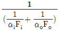
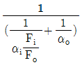
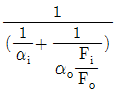
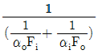
(정답률: 61%)
99. 24500kW의 증기원동소에 사용하고 있는 석탄의 발열량이 7200kcal/kg이고 원동소의 열효율이 23%라면, 매시간당 필요한 석탄의 양(ton/h)은? (단, 1kW는 860kcal/h로 한다.)
- 10.5
- 12.7
- 15.3
- 18.2
(정답률: 54%)
100. 다음 중 증기관의 크기를 결정할 때 고려해야 할 사항으로 가장 거리가 먼 것은?
- 가격
- 열손실
- 압력강하
- 증기온도
(정답률: 37%)